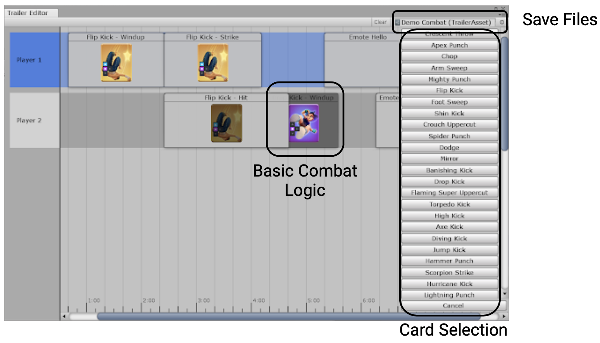
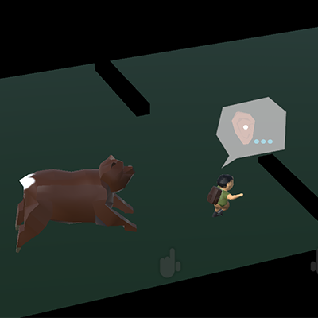

By day, I'm a software engineer at Apple Technology Development Group
By night I'm an amateur tools, games, and app developer.
You can reach me through Twitter and Email.
Projects
Isetta Game Engine
Engine Programmer | C++ | Windows | Fall 2018
The Isetta Engine project was a team of 4 junior developers developing our first game engine in just 3-months.
The goal wasn't to build the best engine but to help demystify engine development for ourselves as well as other novice engine developers by documenting the thoughts and decisions we made throughout.
Interviews were also conducted with industry professionals to pull gain insights and published in a book.
Developed logging system with filtering to enable debugging
Created a GUI abstraction layer using Dear, ImGui API
Implemented an engine configuration system and built tool using WPF to manage
Integrated 3rd-party profiler to enable performance profiling
Setup the build system/pipeline for building engine into dll
Handled resource management for engine and game, built asset processing tool
Developed editor tools in engine (console, inspector, heirarchy)
Integrated OpenGL over main rendering for debug drawing
Hosted a game jam with the engine and wrote a post-mortem on the development
Documented all technical desicions and implementation hosted on the website.
Pitched the project to faculty through rounds of presentations and refinement
1 / 4
Tech demos which validated the engine features.
2 / 4
Games developed while developing the engine to prove games could be made from it.
3 / 4
Games developed in our game jam where users learned our engine in under 8 hours.
4 / 4
The published book which contains interviews with professional engine developers thoughts on engine development.
uFighter is a mobile game being developed by Tonk Tonk games where I worked as a junior developer.
My main responsibilities focused on team workflow and how it could be improved.
Developed timeline editor tool used by animator to create trailers for investors
Bundled assets more efficiently which resulted in a 752% increase in load speeds
Built tool to validate animation events with errors exported into csv
Started automated testing suite to validate UI, network, and different modes of game to avoid regression
Developed editor tool for animator to segment and save animations to save memory of build
Merged multiple build tools into a single, simpler solution when building app
1 / 5
Animation segmentation tool to save memory by reusing pieces of other animations.
3 / 5

Custom timeline tool for creating trailers, incorporated the gameplay logic of moves to know if a move would be played.
3 / 5
Unity timeline to incorporate custom timeline tool and unity's gameplay recording and camera interpolation.
4 / 5
Tools to help quick customization while in-game for quicker trailer turn-around.
5 / 5
Validation tool run before build to check animation event naming convention and use in code.
Dilemma is a room-scale VR experience focused on narrative and level traversal.
The game was developed in a 2 week period using Unity where I acted as the sole programmer on the 5 person team.
Programmed animation integration with layered animations, avatar masks and weights
Developed simple AI system to guide player with locomotion and waypoint system
Created a timeline tool to add/remove voice over and interactions into the linear experience
1 / 7
Sample gameplay showing the intro sequence of the 10-minute experience.
2 / 7
Interaction within the game required user to work alongside AI character to lift doors and move objects.
3 / 7
Experienced re-used the extents of the physical space in VR by having the user walk between edges without realizing their location in the room.
4 / 7
5 / 7
6 / 7
Virtual environment was physically re-created in a festival.
The challenge was a month-long animation project with some of Unity's newly released tools (at the time): CinemaMachine and Timeline.
I took responsibility of the asset pipeline and remote workflow as the project was primarily developed remote with the 7 person team.
Developed editor tools to generate procedural buildings from asset modules
Created workflow for team to use to avoid merge conflicts and to enable artists to use timeline tools
Programmed visualization of extendable-bridge connections and timings
1 / 6
Resulting animation from artist using the tool development to direct spin and extenstion of bridges.
2 / 6
Tool used to procedural generate buildings formats which could be hand selected by the artists to avoid hand-crafting the entire scene.
3 / 6
Top down debug-view of the connecting bridges to ensure the bridge had an end-point that wasn't intersecting a building or bridges colliding.
4 / 6
The camera frustrums setup through the timeline tool throughout the 3 minute animation.
5 / 6
Timeline layout, by using multiple scenes it allowed the team to work remote on separate parts of the project without causing scene conflicts.
6 / 6
Infinite elevators using object pooling to have the illusion of business (its pretty difficult to get an elevator down).
Samurai Seige is a game where the player is mounted on a horse riding into battle the Japanese army and a shield to protect themselves.
The project was developed within a 2-week period, which I focused on the arrow ballistics and interaction with player as well as the movement and interaction with the army.
Designed and developed arrow ballistic mechanics for unpredictable player path
Developed AI for soldiers and general's interactions with player and world
1 / 4
Opening shot as you ride across the bridge into battle ontop of your horse.
2 / 4
3 / 4
Overview of the entire scene with atmospheric lighting.
4 / 4
Lighting and audio sources throughout the scene, worked with the artist to ensure performance wasn't sacraficed.
Programmer | C# | Microsoft Hololens (AR) | Fall 2018
The SoundBearier is an AR game where the player tries to help the little boy reach his home and avoid the bear.
The player must use hand, speech, and volume detection to traverse down the augmented reality hill, when played the objects in the scene are replaced with models of objects.
Developed hand interactions for selection and picking up with Hololens interactions
Built tool to help with AR development by displaying occluded objects only in editor
Developed AI and animation for character interaction with objects (avoidance and climbing)
1 / 6
2 / 6
Debug layout of the scene to help align placement of real objects with the game objects seen in the display.
3 / 6

Gameplay used Hololens speech recognition to direct charcter left/right and jump over obstacles placed in physical world.
4 / 6
The player would select trees to direct the character to climb into them to avoid the bear, this all aligned with physical models.
5 / 6
6 / 6
The game climaxed with the player yelling at the bear to scare it away, which was done by using the speech recognition with a volume threshold.